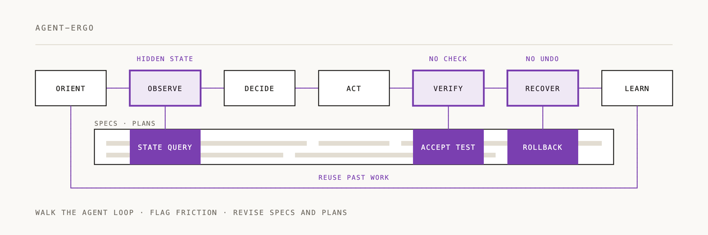

Agent Ergonomics

A reusable skill for making systems agent-intuitive, agent-ergonomic, and agent-accretive, while preserving their purpose, constraints, and useful simplicity.
Give it a repository, specifications, design documents, plans, or a system description. It reconstructs the whole system from an operator's perspective, identifies concrete friction, makes coherent changes, and verifies the result at the level actually available. It does not substitute polished prose for implementation evidence.
Start here
Use agent-ergonomics on this repository and its design documents.
Make the system easier for an agent to understand, control, verify, recover,
and improve through verified experience. Apply coordinated changes to the
specifications and plans. Preserve current constraints and label anything
that still requires implementation.
The default is improve-docs: edit the relevant specifications and plans, not code,
tests, configuration, permissions, or deployments. Use an explicit audit-only request
for findings without edits. Authorize implementation explicitly to include code and
runtime tests within a defined scope.
No connector is required. With writable sources, the skill makes the in-scope edits. With read-only sources, it supplies exact replacement text or patches labeled unapplied. With only an idea, it produces a proportionate design and plan.
Design principles built into the workflow
- Model the linked system, from outcomes through journeys, capabilities, contracts, state, and mechanisms; do not optimize unrelated components independently.
- Test the complete operator loop: orient, observe, decide, act, verify, recover, learn.
- Treat accretion as verified, scoped, correctable reuse, not unlimited retention or a way to promote remembered instructions into authority.
- Require concrete benefit and acceptance evidence; prefer reuse, deletion, and small contracts to unnecessary infrastructure.
- Preserve the distinction between a design edit, a walkthrough, and a runtime test.
Package contents
| File or directory | Purpose |
|---|---|
SKILL.md | Core workflow, default boundaries, and progressive resource loading |
agents/openai.yaml | Display metadata and default invocation |
references/ | System modeling, review lenses, interface contracts, accretion, coordinated edits, scenarios, manifest format |
assets/design-packet.md | Optional adaptable output structure; use only needed sections |
assets/traceability.example.json | Fictional manifest example, not project evidence |
scripts/validate_traceability.py | Optional read-only metadata checker |
tests/test_validate_traceability.py | Deterministic tests of that checker |
evals/cases.json | Behavioral evaluation fixtures, including adversarial and non-trigger cases |
The core workflow needs no executable helper. SKILL.md names a trigger for each reference and asset; load them only when the sources show it. The optional checker requires Python 3.10 or newer and only the standard library. Resolve all helper paths relative to this skill directory.
SKILL.md deliberately does not mention evals/. When it linked the fixtures, an
agent running the skill read them mid-task and graded its own work against the
rubric.
Optional checks
python scripts/validate_traceability.py assets/traceability.example.json
python scripts/validate_traceability.py /path/to/real-manifest.json --root /path/to/project
python -m unittest discover -s tests -v
The manifest checker validates declared links, closure, dependencies, scope, and optional local file existence. It cannot prove that evidence is true, that documents agree semantically, or that runtime behavior is correct. A green checker result is not a green system assessment.
Behavioral evaluation
The fixtures in evals/cases.json define how to evaluate actual behavior, rather than
crediting answers that merely repeat the desired vocabulary. On 2026-09-23, fixtures
AE-01, AE-02, AE-03, AE-10 and AE-14, plus a held-out case that is not in this package,
ran headless in Claude Code 2.1.280. Sonnet ran each case twice with this version of the
skill, with the version before it, and with no skill. A blind Opus judge graded the runs
against each case's rubric. Two runs per case make these results directional.
The first three rows cover the five cases judged in every arm; the judge's quota guard stopped it before this version's AE-14 runs.
| Measure | No skill | Previous version | This version |
|---|---|---|---|
| Rubric score, 0 to 1 | 0.93 | 0.98 | 0.99 |
| Overbuild, 0 to 3 (lower is better) | 1.0 | 1.6 | 1.0 |
| Minutes per run (a timeout counts as 30) | 9.8 | 24.3 | 13.2 |
| Runs that finished, all six cases | 12 of 12 | 8 of 12 | 12 of 12 |
| Reference and asset reads per run, all six cases | - | 6.4 | 2.9 |
Known limits:
- The no-skill arm loses its rubric points only on AE-01 and AE-02, and this version costs about 1.6 times as much per run.
- One of 12 runs wrote a record of its own review into the repository's plan.
- Final reports average about 1,000 words, twice the previous version's, and each lists all eleven failure branches. Four of the ten judge notes fault a report's length or checklist style; two of them name the branch list.
- This version's AE-14 runs made no changes, as that case expects, but are unjudged.
The harness, the held-out case, and the per-run results are not in this package. They
sit in ~/eval-archives/agent-ergonomics/2026-09-23/ on the machine that ran them, where
findings.md records each step.